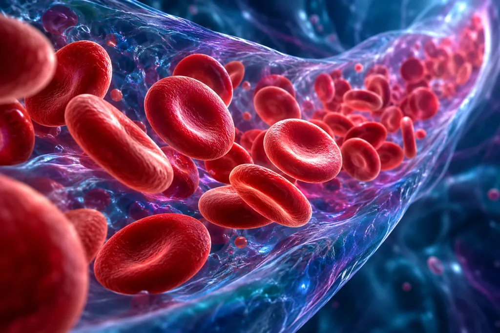

INNOVACIÓN TERAPÉUTICA
Medicamentos biotecnológicos.
Los anticuerpos monoclonales y las proteínas recombinantes forman parte de los medicamentos innovadores descritos en el documento.
CAPÍTULO 03 · RESULTADOS
Hallazgos del análisis documental sobre los medicamentos biotecnológicos y sus aplicaciones médicas.

LOS HALLAZGOS DEL TEXTO
Los primeros hallazgos proceden del documento base. La evidencia internacional complementaria aparece más abajo con sus fuentes y límites.
INNOVACIÓN TERAPÉUTICA
Los anticuerpos monoclonales y las proteínas recombinantes forman parte de los medicamentos innovadores descritos en el documento.
ATENCIÓN ESPECÍFICA
Estos medicamentos permiten tratar con terapias específicas fallos genéticos diagnosticados, como ocurre con muchos de los nuevos tratamientos contra el cáncer.

APLICACIONES MÉDICAS
La primera nota identifica aplicaciones en artritis reumatoide, hepatitis C, diabetes y cáncer, tanto de órganos sólidos como hematológico.
LEER EL AVANCE CON MATICES
La primera nota, publicada en 2008, señala que los biofármacos han contribuido a mejorar la calidad de vida y alargar la vida de pacientes crónicos y terminales. También indica que sus logros en términos de AVAC son generalmente modestos.
Revisar la nota completaRETOS IDENTIFICADOS
Analizar los sesgos de los datos y la calidad de los modelos.
Estudiar la viabilidad del acceso a información e interpretar correctamente los falsos negativos o positivos.
Determinar la responsabilidad de la decisión y contar con un marco regulatorio y ético sólido.
EVIDENCIA INTERNACIONAL
Indicadores de cáncer publicados por la OMS en 2024. El año del indicador se especifica en cada tarjeta. (OMS, 2024)
MUNDO · 2022
20 millonesEstimación de incidencia mundial. Las estimaciones abarcan 185 países y 36 tipos de cáncer.
MUNDO · 2022
9,7 millonesEstimación mundial de mortalidad en ese año; no es una medida de eficacia de una terapia.
ENCUESTA · 2020–2021
39 %De los 115 países participantes cubría servicios básicos de manejo del cáncer en paquetes financiados para toda la ciudadanía.
Interpretación del proyecto: estas cifras describen carga de enfermedad y cobertura sanitaria. No indican cuántas personas reciben biotecnología ni demuestran que una tecnología reduzca la mortalidad global.
CASO DOCUMENTADO · 2023
REINO UNIDO
La MHRA anunció la autorización de Casgevy para enfermedad de células falciformes y beta talasemia dependiente de transfusiones en pacientes de 12 años o más. (MHRA, 2023)
ESTADOS UNIDOS
La FDA aprobó Casgevy para enfermedad de células falciformes en pacientes de 12 años o más con crisis vasooclusivas recurrentes. (FDA, 2023)
DATOS PUBLICADOS POR LA FDA · CASGEVY
29 de 31 (93,5 %)Pacientes evaluables sin crisis vasooclusivas graves durante al menos 12 meses consecutivos, dentro de un seguimiento de 24 meses. Se trataron 44 pacientes; 31 tenían seguimiento suficiente para evaluar ese desenlace. (FDA, 2023)
Límite: ensayo multicéntrico de un solo grupo, sin grupo de comparación concurrente. El porcentaje corresponde a ese desenlace y a los pacientes evaluables, no a una tasa de curación mundial ni a ausencia de riesgos. La FDA indicó seguimiento a largo plazo.